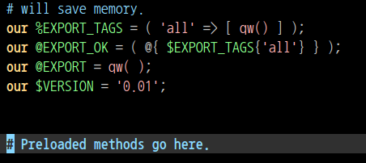
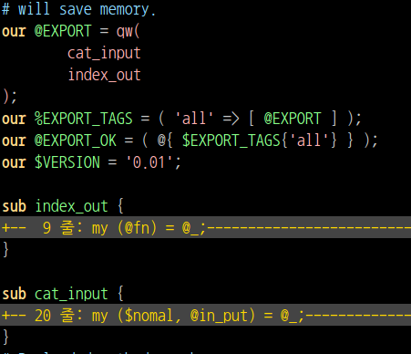
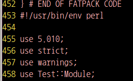
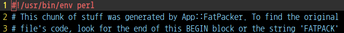

$ h2xs -AX -n Test::Module -b 5.10.0 Writing Test-Module/li/Test/Module.pm Writing Test-Module/Makefile.PL Writing Test-Module/README Writing Test-Module/t/Test-Module.t Writing Test-Module/Changes Writing Test-Module/MANIFEST
$ tree |-- Changes |-- MANIFEST |-- Makefile.PL |-- README |-- lib | `-- Test | `-- Module.pm |-- t `-- Test-Module.t
Revision history for Perl extension Test::Module. 0.01 Tue Aug 23 19:21:44 2011 - original version; created by h2xs 1.23 with options -AX -n Test::Module -b 5.10.0
Changes Makefile.PL MANIFEST README t/Test-Module.t lib/Test/Module.pm
use 5.010000;
use ExtUtils::MakeMaker;
WriteMakefile(
NAME => 'Test::Module',
VERSION_FROM => 'lib/Test/Module.pm',
PREREQ_PM => {},
($] >= 5.005 ?
(ABSTRACT_FROM => 'lib/Test/Module.pm',
AUTHOR => 'rumidier ') : ()),
);
`-- Test `-- Module.pm


use strict;
use warnings;
use Test::More tests => 1;
BEGIN { use_ok('Test::Module') };
$ ls Test-Module-001 $ tar cvzf Test-Module-001.tar.gz ./Test-Module-001 $ ls Test-Module-001.tar.gz Test-Module-001
$ cd Test-Module-001 Changes MANIFEST .... t $ make dist Changes MANIFEST .... t Test-Module-0.01.tar.gz
장점
$ tree |-- lib `-- t_module.pl $ fatpack trace t_module.pl $ tree |-- fatpacker.trace |-- lib `-- t_module.pl
$ fatpack packlists-for `cat fatpacker.trace` > packlists $ tree |-- fatpacker.trace |-- lib |-- packlists `-- t_module.pl
cat packlists$ fatpack tree `cat packlists` $ tree |-- fatpacker.trace |-- lib |-- packlists `-- t_module.pl
$ (fatpack file; cat t_module.pl) > Module.pl $ tree |-- Module.pl |-- fatpacker.trace |-- fatlib | |-- Data | | `-- Section | | `-- Simple.pm | `-- Test | `-- Module.pm |-- lib |-- packlists `-- t_module.pl
$ ./Module.pl
$ ./Module.plo./Module.pl: 줄 3: BEGIN: 명령어를 찾을 수 없음
./Module.pl: 줄 4: my: 명령어를 찾을 수 없음
./Module.pl: 줄 6: {Data/Section/Simple.pm}: 그런 파일이나 디렉터리가 없습니다
./Module.pl: 줄 139: {Test/Module.pm}: 그런 파일이나 디렉터리가 없습니다
./Module.pl: 줄 441: s/^: 그런 파일이나 디렉터리가 없습니다
./Module.pl: 줄 443: unshift: 명령어를 찾을 수 없음
./Module.pl: 줄 444: syntax error near unexpected token `{'
./Module.pl: 줄 444: ` if (my $fat = $fatpacked{$_[1]}) {'

